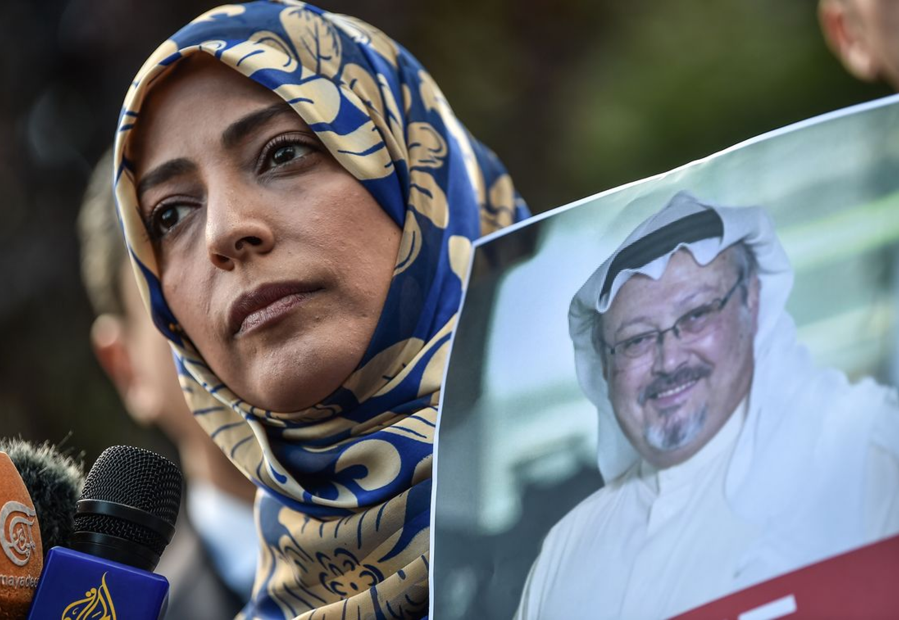
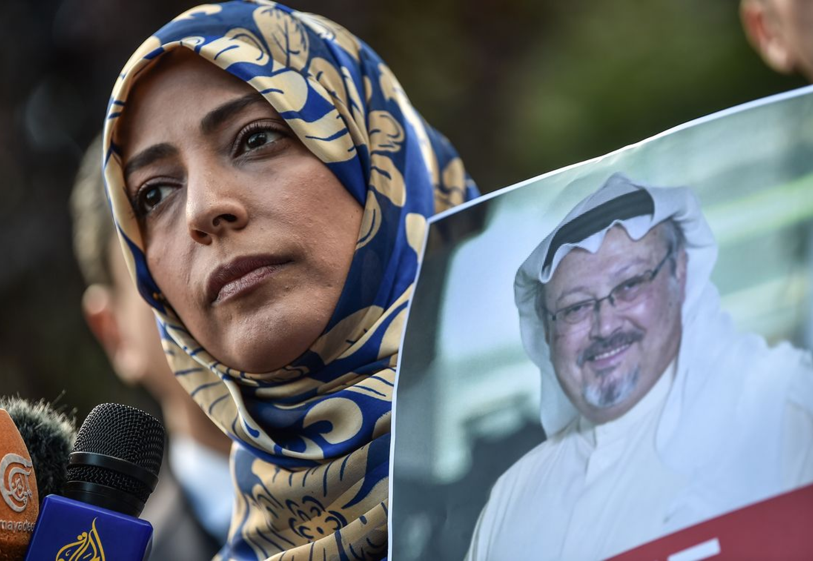

Le
printemps arabe
au
Féminin
Le printemps arabe
En 2011, une vague de manifestations inédites connues sous le nom de "Printemps arabe" bouleversait le Maghreb et le Moyen-Orient.
Des millions de personnes descendaient dans les rues pour défier l’ordre établi, de la Tunisie à l’Égypte, en passant par la Libye ou le Yémen.
Un événement d’une ampleur inédite, une secousse qui a pris de court des dirigeants au pouvoir depuis des décennies.
Quel rôle les femmes ont-elles joué au cours de cette révolution ? Est-elle la première révolution numérique dans le monde arabe ?

Les femmes à l’ère
du numerique
La vaste participation des femmes lors des révolutions du Printemps arabe a été un choc pour les régimes autoritaires, qui ne s’attendaient pas à les voir sortir dans la rue et participer aux manifestations malgré les risques sérieux encourus. En 2011, les femmes ont surpris tout le monde lorsqu’elles ont décidé de ne plus être des victimes, mais d’être des agents du changement. Pourquoi les femmes ont-elles franchi le pas ? Peut-être parce qu’elles étaient, comme les jeunes de ces pays, les principales victimes de ces régimes corrompus qui ne respectaient pas la dignité humaine et bafouaient leurs droits à la liberté, aux libertés fondamentales et à l’égalité. Le rôle d'Internet a été crucial dans la chute de plusieurs régimes, des femmes ont participé à la contestation politique sur Internet mais aussi dans les rues défiant les normes sociales traditionnelles.
Des femmes qui
osent le changement
Tawakkol Karman
Nobel du printemps arabe
Journaliste militante et femme politique yéménite. Très suivie sur les réseaux sociaux, près de 4 Millions d’abonnés sur Facebook et plus de 1 millions sur Twitter. Tawakkol Karman, lauréate du Prix Nobel de la paix 2011 est connue au Yémen comme la Mère de la révolution .
 

Lina Ben Mhenni
Tunisian Girl.
Cyberdissidente, blogueuse et journaliste tunisienne. Après l’immolation par le feu du jeune marchand de rue Mohamed Bouazizi, elle avait été la première blogueuse à se rendre à Sidi Bouzid, munie de sa petite caméra. Contenu qu'elle avait retransmis, via les réseaux sociaux. En 2011, Lina Ben Mhenni avait publié un ouvrage,Tunisian Girl, blogueuse pour un printemps arabe.


Asmaa Mahfouz
Prix Sakharov
Youtubeuse et militante égyptienne membre du Mouvement de la Jeunesse du 6 avril 2011. Lauréate en 2011 du Prix Sakharov pour la liberté de penser décerné à cinq militants du Printemps arabe.